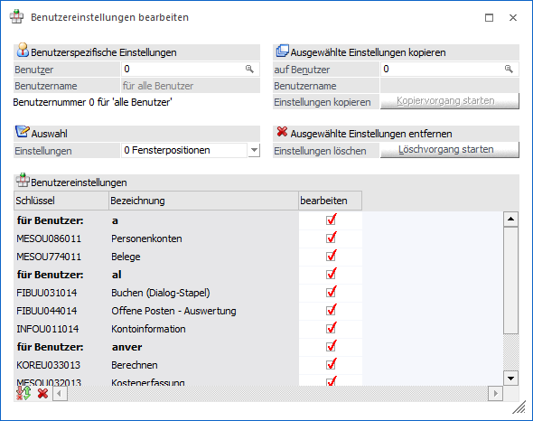
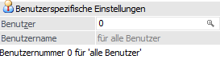
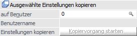
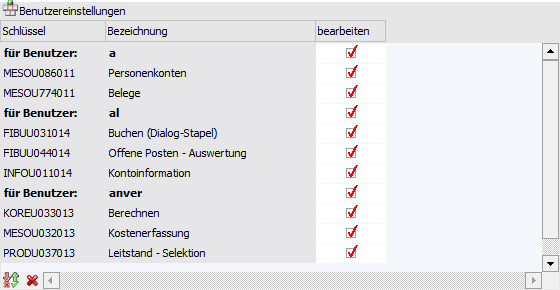
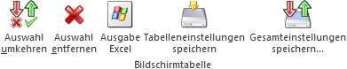
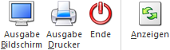

Hin und wieder kommt es vor, dass Einstellungen von einem Benutzer vorgenommen wurden, die im Nachhinein gesehen, nicht erwünscht sind. Im Menüpunkt…
1 Benutzer
1 Benutzerspezifische Einträge
… können solche Einträge wieder entfernt werden. Zusätzlich können in diesem Menüpunkt benutzerspezifische Einträge auf weitere Benutzer kopiert werden. Diese Funktion gilt auch für individuelle Formulare.

Benutzerspezifische Einstellungen

Ø Benutzer
An dieser Stelle kann die Benutzernummer des Benutzers hinterlegt werden, bei welchem benutzerspezifische Einträge gelöscht oder von dem Einträge kopiert werden sollen.
Hinweis
Wird eine 0 eingetragen, so werden in der Tabelle die Einstellungen aller Benutzer angezeigt.
Ø Benutzername
Nach Bestätigung der Benutzernummer wird in diesem Feld der Benutzername angezeigt.
Auswahl
Ø Einstellungen
Hier kann ausgewählt werden, welche Einstellungen für das Löschen oder Kopieren in der Tabelle angezeigt werden sollen. Folgende Auswahlmöglichkeiten stehen hierfür zur Verfügung:
ü 0 - Fensterpositionen
Das sind
die im Programm geänderten Eingabemasken.
ü 1 - Druckvorschaupositionen
Das
sind die im Programm geänderten Bildschirmdarstellungen für Ausdrucke.
ü 2 - Tabelleneinstellungen
Das
sind die individuellen Einstellungen von Tabellen (welche Reihenfolge, Größe der
Spalten etc.).
ü 3 - gestürzte Tabellen
Anzeige
aller Tabellen, die mit gestürzter Ansicht gespeichert wurden.
ü 4 - kein Power Report in
Druckvorschau
Auflistung jener Formulare, bei denen die Datenerzeugung des
Power Reports deaktiviert wurde.
ü 5 - Zoomfaktor in
Formularen
Auflistung jener Formular, bei denen ein individueller Zoomfaktor
gespeichert wurde.
Ausgewählte Einstellungen kopieren

Ø auf Benutzer
In diesem Feld kann eingetragen werden, auf welchen Benutzer die ausgewählten Einträge kopiert werden sollen. Nach Bestätigung einer Benutzernummer wird im Feld darunter der Benutzername angezeigt.
Ø Benutzername
Nach Bestätigung der Benutzernummer wird in diesem Feld der Benutzername angezeigt.
Ø Einstellungen kopieren
Durch Anklicken des Buttons "Kopiervorgang starten" werden alle Einträge, die in der Tabelle angezeigt und entsprechend gekennzeichnet sind, auf den angegebenen Benutzer kopiert.
Ausgewählte Einstellungen entfernen
Ø Einstellungen löschen
Durch Anklicken des Buttons "Löschvorgang starten" werden alle Einträge, die in der Tabelle angezeigt und entsprechend gekennzeichnet sind, gelöscht.
Tabelle "Benutzereinstellungen"

Durch Anklicken des Buttons "Anzeigen" wird die Tabelle gemäß den zuvor getroffenen Einstellungen gefüllt. Dabei werden folgende Werte sichtbar:
Ø Schlüssel
Interne Nummer, unter welcher dieser Eintrag gespeichert ist.
Das Flag U kennzeichnet hierbei Fenster der cwlstart.exe, das Flag M kennzeichnet Fenster der MWL.
Ø Bezeichnung
Bezeichnung des Elements, für das es benutzerspezifische Einstellungen gibt.
Hinweis
Sind Einträge für mehrere Benutzer vorhanden, dann wird jeweils eine Zeile "für Benutzer" mit dem Benutzernamen angezeigt.
Ø bearbeiten
Ist diese Checkbox aktiv, so wird dieser Eintrag beim Löschen bzw. beim Kopieren berücksichtigt.
Tabellenbuttons

Ø Auswahl umkehren
Durch Anwahl des Buttons "Auswahl umkehren" wird die Auswahl in der Spalte "bearbeiten" umgekehrt.
Ø Auswahl entfernen
Mit Hilfe des Buttons "Auswahl entfernen" werden alle Einträge abgewählt.
Ø Ausgabe Excel
Durch Anwahl des Buttons "Ausgabe Excel" wird der Inhalt der Tabelle an Microsoft Excel übergeben.
Ø Tabelleneinstellungen speichern
Die Spalten einer Tabelle können grundsätzlich an beliebige Positionen verschoben, bzw. in der Breite entsprechend angepasst werden. Durch Anwahl des Buttons "Tabelleneinstellungen speichern" werden die Einstellungen benutzerspezifisch gespeichert und bei dem nächsten Aufruf des Programmpunktes wieder vorgeschlagen.
Ø Gesamteinstellungen speichern
Im Gegensatz zu "Tabelleneinstellungen speichern" können mit "Gesamteinstellungen speichern" mehrere Tabellenaufbauten gespeichert und nach Wunsch geladen werden. Zusätzlich werden Sonderfunktionen der Tabelle (z.B. "Spalte gruppieren") ebenfalls bei der Speicherung bedacht.
Buttons

Ø Ausgabe Bildschirm
Durch Anwählen dieses Buttons wird eine Liste aller vorhandenen benutzerspezifischen Einstellungen am Bildschirm ausgegeben.
Ø Ausgabe Drucker
Durch Anwählen dieses Buttons wird eine Liste aller vorhandenen benutzerspezifischen Einstellungen auf den Drucker bzw. den Spooler ausgegeben.
Ø Ende
Durch Drücken des Buttons "Ende" oder der ESC-Taste wird das Fenster geschlossen.
Ø Anzeigen
Durch Anklicken des Buttons "Anzeigen" wird die Tabelle gemäß den getroffenen Einstellungen gefüllt.